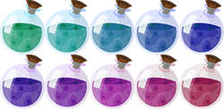

<body>
    <canvas id="canvas" width="750" height="400" style="border: 1px solid lightgray;">
    </canvas>
    
</body>
<script>
    "use strict";
    let canvas;
    let context;
    let gameObjects;

    let oldTimeStamp = 0;
    let secondsPassed = 0;

    // Gravity
    const g = 9.81;

    // World size
    const canvasWidth = 750;
    const canvasHeight = 400;

    // Bounce factor
    const restitution = 0.90;

    window.onload = init;

    function init() {
        canvas = document.getElementById("canvas");
        context = canvas.getContext("2d");
        createWorld();
        window.requestAnimationFrame(gameLoop);
    }

    function gameLoop(timeStamp) {
        secondsPassed = (timeStamp - oldTimeStamp) / 1000;
        secondsPassed = Math.min(secondsPassed, 0.1);
        oldTimeStamp = timeStamp;
        for (let i = 0; i < gameObjects.length; i++) {
            gameObjects[i].update(secondsPassed);
        }
        detectCollisions();
        detectEdgeCollisions();

        context.clearRect(0, 0, canvas.width, canvas.height);
        for (let i = 0; i < gameObjects.length; i++) {
            gameObjects[i].draw();
        }
        requestAnimationFrame(gameLoop);
    }

    function createWorld() {
        gameObjects = [
            new Circle(context, 100, 80, 120, 0, 25, 5, 1),
            new Circle(context, 200, 80, -120, 0, 25, 5, 1),
            new Circle(context, 300, 80, 100, 0, 25, 4, 1),
            new Circle(context, 400, 80, -100, 0, 25, 4, 1),
            new Circle(context, 500, 80, 80, 0, 25, 3, 1),
            new Circle(context, 600, 80, -80, 0, 25, 3, 1),

            new Circle(context, 120, 180, 150, 0, 30, 8, 0.9),
            new Circle(context, 250, 180, -150, 0, 30, 8, 0.9),
            new Circle(context, 380, 180, 120, 0, 30, 10, 0.9),
            new Circle(context, 510, 180, -120, 0, 30, 10, 0.9),

            new Circle(context, 180, 300, 180, -50, 35, 15, 0.8),
            new Circle(context, 350, 300, -180, -50, 35, 15, 0.8),
            new Circle(context, 520, 300, 150, -50, 35, 20, 0.8),

            new Circle(context, 80, 140, 220, 0, 15, 2, 1),
            new Circle(context, 670, 140, -220, 0, 15, 2, 1),
            new Circle(context, 80, 250, 200, 0, 15, 2, 1),
            new Circle(context, 670, 250, -200, 0, 15, 2, 1)
        ];
    }

    function detectCollisions() {
        let obj1;
        let obj2;

        for (let i = 0; i < gameObjects.length; i++) {
            gameObjects[i].isColliding = false;
        }

        for (let i = 0; i < gameObjects.length; i++) {
            obj1 = gameObjects[i];
            for (let j = i + 1; j < gameObjects.length; j++) {
                obj2 = gameObjects[j];
                if (circleIntersect(obj1.x, obj1.y, obj1.radius, obj2.x, obj2.y, obj2.radius)
                ) {
                    obj1.isColliding = true;
                    obj2.isColliding = true;

                    // Next animation frame
                    obj1.nextFrame();
                    obj2.nextFrame();

                    let vCollision = { x: obj2.x - obj1.x, y: obj2.y - obj1.y };
                    let distance = Math.sqrt(vCollision.x * vCollision.x + vCollision.y * vCollision.y);
                    let vCollisionNorm = { x: vCollision.x / distance, y: vCollision.y / distance };
                    let vRelativeVelocity = { x: obj1.vx - obj2.vx, y: obj1.vy - obj2.vy };
                    let speed = vRelativeVelocity.x * vCollisionNorm.x + vRelativeVelocity.y * vCollisionNorm.y;
                    speed *= Math.min(obj1.restitution, obj2.restitution);
                    if (speed < 0) {
                        continue;
                    }
                    let impulse = 2 * speed / (obj1.mass + obj2.mass);
                    obj1.vx -= impulse * obj2.mass * vCollisionNorm.x;
                    obj1.vy -= impulse * obj2.mass * vCollisionNorm.y;
                    obj2.vx += impulse * obj1.mass * vCollisionNorm.x;
                    obj2.vy += impulse * obj1.mass * vCollisionNorm.y;
                }
            }
        }
    }

    function circleIntersect(x1, y1, r1, x2, y2, r2
    ) {
        let squareDistance = (x1 - x2) * (x1 - x2) + (y1 - y2) * (y1 - y2);
        return squareDistance <= (r1 + r2) * (r1 + r2);
    }

    function detectEdgeCollisions() {
        let obj;
        for (let i = 0; i < gameObjects.length; i++) {
            obj = gameObjects[i];
            if (obj.x < obj.radius) {
                obj.vx =
                    Math.abs(obj.vx) * restitution;
                obj.x = obj.radius;
            }
            else if (
                obj.x > canvasWidth - obj.radius
            ) {
                obj.vx = -Math.abs(obj.vx) * restitution;
                obj.x = canvasWidth - obj.radius;
            }

            if (obj.y < obj.radius) {
                obj.vy = Math.abs(obj.vy) * restitution;
                obj.y = obj.radius;
            }
            else if (
                obj.y > canvasHeight - obj.radius
            ) {
                obj.vy = -Math.abs(obj.vy) * restitution;
                obj.y = canvasHeight - obj.radius;
            }
        }
    }

    class GameObject {
        constructor(context, x, y, vx, vy, mass = 1, restitution = 0.90
        ) {
            this.context = context;
            this.x = x;
            this.y = y;
            this.vx = vx;
            this.vy = vy;
            this.mass = mass;
            this.restitution = restitution;
            this.isColliding = false;
        }
    }

    class Circle extends GameObject {
        static sprite;
        static numColumns = 5;
        static numRows = 2;
        static frameWidth = 0;
        static frameHeight = 0;

        constructor(context, x, y, vx, vy, radius, mass = 1, restitution = 0.90
        ) {
            super(context, x, y, vx, vy, mass, restitution);
            this.radius = radius;
            this.currentFrame = 0;
            this.angle = 0;
            if (!Circle.sprite) {
                Circle.sprite =
                    document.getElementById(
                        "sprite"
                    );
                Circle.frameWidth = Circle.sprite.width / Circle.numColumns;
                Circle.frameHeight = Circle.sprite.height / Circle.numRows;
            }
        }

        nextFrame() {
            this.currentFrame++;
            let maxFrame = Circle.numColumns * Circle.numRows - 1;
            if (this.currentFrame > maxFrame) {
                this.currentFrame = 0;
            }
        }

        draw() {
            let column = this.currentFrame % Circle.numColumns;
            let row = Math.floor(this.currentFrame / Circle.numColumns
            );
            // Set the origin to the center of the circle, rotate the context, move the origin back
            this.context.translate(this.x, this.y);
            this.context.rotate(Math.PI / 180 * (this.angle + 90));
            this.context.translate(-this.x, -this.y);

            // Draw the image, rotated
            this.context.drawImage(Circle.sprite, column * Circle.frameWidth, row * Circle.frameHeight, Circle.frameWidth, Circle.frameHeight, (this.x - this.radius), (this.y - this.radius) - this.radius * 0.4, this.radius * 2, this.radius * 2.42);
            // Reset transformation matrix
            this.context.setTransform(1, 0, 0, 1, 0, 0);

            this.context.beginPath();
            this.context.arc(this.x, this.y, this.radius, 0, 2 * Math.PI);
            // this.context.fill();
            this.context.strokeStyle = "red";
            this.context.stroke();
        }

        update(secondsPassed) {
            this.vy += g * secondsPassed;

            // Move with velocity x/y
            this.x += this.vx * secondsPassed;
            this.y += this.vy * secondsPassed;

            // Calculate the angle
            let radians = Math.atan2(this.vy, this.vx);
            this.angle = 180 * radians / Math.PI;
        }
    }
</script>